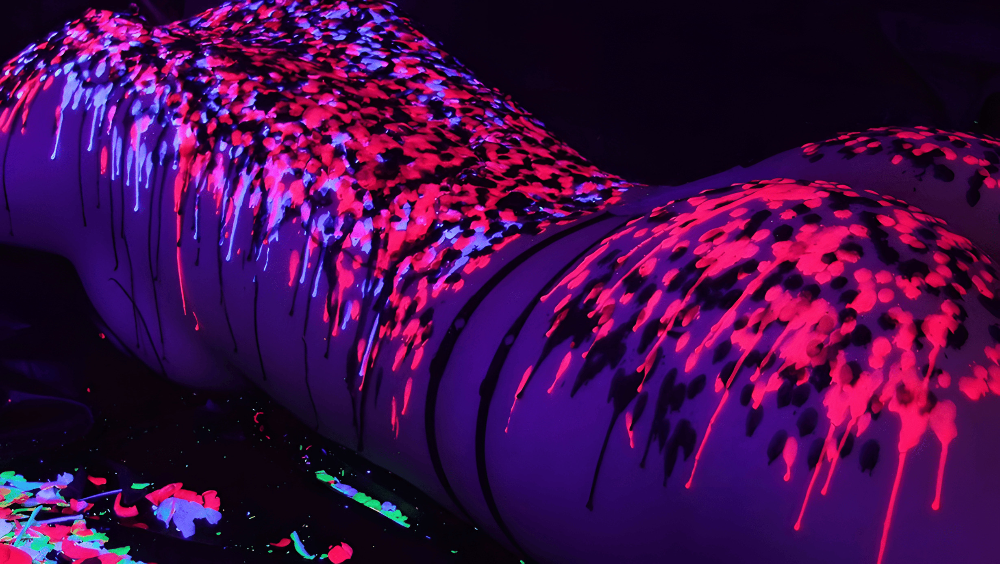

Ваксплей (waxplay) представляет собой температурную и тактильную практику, во время которой на кожу партнера наносится расплавленный воск от специальных свечей. Воск затвердевает на теле, создавая контраст температур и легкие ожоги, стимулируя эндорфины и возбуждение. Эта форма интимной игры сочетает сенсорные ощущения от тепла и охлаждения, часто используется как элемент прелюдии для расслабления и возбуждения. Практика подходит для пар, желающих разнообразить ощущения, но требует строгого соблюдения техники безопасности.
После практики ваксплея
Сначала нужно выбрать низкотемпературные свечи: — Массажные свечи: Плавятся при 40—50°C, превращаются в масло для массажа. Идеальны для новичков. — Соевые или парафиновые: Температура 50—65°C, образуют корку. Для классического ваксплея. — Цветные или ароматизированные: Добавляют эстетику и боди-арт эффекты.
Стоит выбрать помещения без сквозняков. Перед началом нужно протестировать воск на запястье — капля не должна жечь.
Важно не допускать контакта рта с другими частями тела после ануса без предварительного ополаскивания.
Подготовка включает очищение кожи и разогрев массажем. Важно отсутствие ран и жирных кремов на теле. Под рукой нужно иметь лед и полотенце. Важно обсудить границы заранее. Можно установить стоп-слово (например, «красный»), после которого партнер должен остановиться.
Во время практики нужно держать свечу на расстоянии 30+ см от кожи, избегать лица, гениталий, волос и шрамов. Не использовать обычные хозяйственные свечи из-за высокой температуры (до 80°C).
После сессии воск медленно и аккуратно снять скребком или маслом, а кожу увлажнить. Риски ожогов минимизируются контролем высоты и практики. Далее нужно мониторить кожу — покраснение уходит за 1–2 дня.
Нужна консультация с врачом при чувствительной коже или заболеваниях.
Разогреть кожу массажным маслом для усиливания комфорта. Зажечь свечу, подождать 2–5 мин для равномерного горения и плавления.
Наиболее комфортные позиции: партнер лежит на спине (для груди/живота), на животе (для спины/ягодиц). Начинать стоит с живота или спины.

Во время практики
Техники включают капание расплавленного воска с высоты 30–100 см (капли остывают в полете, ниже — горячее, выше — менее горячие), литье струйкой, размазывание руками, рисование узоров и линий, а также комбинацию с бандажем (шибари). Можно чередовать с другими действиями (объятия, прикосновения кубиками льда).
Ощущается как покалывание, жжение, эйфория. Практика стимулирует эндорфины, способствует медитативному состоянию или острым ощущениям в зависимости от интенсивности.
Ваксплей предлагает уникальный спектр ощущений от расслабляющего тепла до интенсивной стимуляции, идеально вписываясь в интимные практики, усиливает доверие через контроль и подчинение, развивает сенсорную осознанность и эмоциональную связь. Для одного — власть над ощущениями, для другого —катарсис от температурного воздействия. Правильный выбор свечей и техники обеспечивает безопасность, превращая игру в источник глубокого удовольствия и близости.